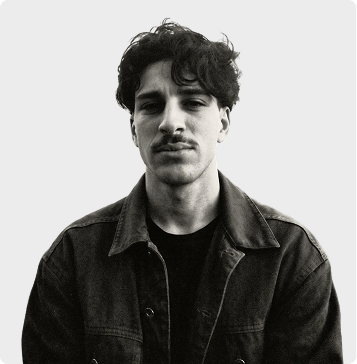

about me
introduction
I am Samy Achab, a creative product engineer and entrepreneur from Junia Engineering School. I studied Interaction & UX/UI Design at the Academy of Art University in San Francisco. Through this portfolio, I invite you to discover my work and explore my journey between product design, graphic creation, and visual expression.
Beyond my professional work, I'm a high-level runner. This dual identity, engineer and athlete shapes everything I do: discipline, resilience, and a champion's mindset applied to every project.
Curious and passionate, I strive to push the boundaries of my creativity by constantly exploring new styles, trends, and methods. My approach blends modern and strategic thinking with hands-on execution creating visuals and products that are both beautiful and functional.

contact
Education & Training

Master’s Dual Degree in Entrepreneurship
Dual-degree program focused on the creation, structuring, and development of my entrepreneurial project ; IKO. Relevant coursework: Business Strategy, Innovation Financing, Project Management, Marketing, Business Model
MA : Interaction & UX/UI Design
Deep dive into UX methods (Research, Understand users, Design, Test), prototyping in Figma, user interviews, and iterative design. Also studied motion design and front-end basics (HTML, CSS, JavaScript).
Engineering Degree
Specialization in textile materials and processes, with a technical, environmental, and managerial approach. Relevant coursework : Textile Finishing and Treatment, Fibrous Materials, Textile Distribution Management, Strategic Resources, Life Cycle Assessment (LCA), Color Science, Surface Treatment and Coating
Thank you for taking the time to explore my work. I'm currently seeking a CDI position where I can contribute my hybrid skills to meaningful projects. Let's talk about design, product, entrepreneurship, or just running.